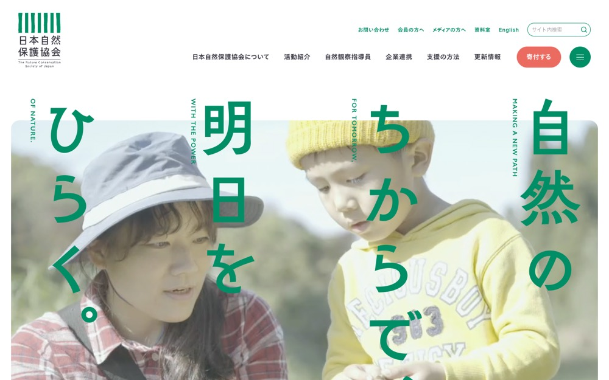

日本自然保護協会オフィシャルサイト
白地に #8c7d6c を大きな面で置く配色。影も枠線もほとんど使わない。本文 14px・行間 1、セクション間 100px。
配色
文字色は #363640 / #ffffff / #008e66 / #004b36。
どこに使っているか（箇所数）
| 色 | 面 | 文字 | 枠線 | ボタンの地 |
|---|---|---|---|---|
#ffffff |
32 | 81 | 0 | 11 |
#f1f5f7 |
2 | 0 | 0 | 0 |
#fbf8e9 |
1 | 0 | 0 | 0 |
#008e66 |
15 | 39 | 20 | 1 |
#004b36 |
10 | 12 | 5 | 9 |
#363640 |
0 | 166 | 0 | 0 |
#8c7d6c は
文字
和文
FOT-筑紫A丸ゴシック Std B欧文
Inter本文
14px / 行間 1この見本は Noto Sans JP で表示していますあのイーハトーヴォのすきとおった風
あのイーハトーヴォのすきとおった風
あのイーハトーヴォのすきとおった風
あのイーハトーヴォのすきとおった風
あのイーハトーヴォのすきとおった風
あのイーハトーヴォのすきとおった風
あのイーハトーヴォのすきとおった風
余白とかたち
| コンテンツ幅 | 1200px | |
|---|---|---|
| 読ませる段の幅 | 580px | |
| セクションの上下余白 | 100px | |
| 並びの間隔 | 5 / 8 / 10 / 15px | |
| 角丸 | 0px（大きな面は 5px） | |
| 影 | なし | |
| 画面幅の切り替え | 1400 / 1100 / 480 / 375 / 374px |
ボタン
お問い合わせ
#ffffff / 18px / 600 / 角丸 9999px
もっと見る
#004b36 / 30px / 700 / 角丸 50%
もっと見る
#004b36 / 20px / 300 / 角丸 9999px
ページの組み立て
上から順に、実際に並んでいたセクション。高さの比率もそのまま。
1
ヒーロー（画像）
800px
2
4カラム・画像あり
340px
3
6カラム・画像あり
1120px
4
1カラム・画像あり
900px
5
4カラム・画像あり
760px
6
6カラム・画像あり
3000px
7
1カラム・画像あり
1020px
8
1カラム・画像あり
1120px ・ #fbf8e9
9
4カラム・画像あり
1720px
10
2カラム
720px ・ #f1f5f7
11
1カラム・文字だけ
580px
12
6カラム・画像あり
620px ・ #f1f5f7
13
1カラム・画像あり
380px
14
4カラム・画像あり
620px
全14セクション。
面と、その上に置く線・文字
| 面 | 使用箇所 | 線と文字 |
|---|---|---|
#f1f5f7 |
2 | #8c7d6c |
#ffffff |
1 | #8c7d6c |
#fbf8e9 |
1 | #8c7d6c |
#004b36 |
1 | #ffffff |
線と文字の色は固定ではなく、乗っている面で入れ替える。
部品
同じ形が 8 箇所。角丸 0px ／ 影なし
角丸は 0px だが、完全な円は別扱いで 7 箇所（64px×4、48px×3）。角を丸めないことと、円のモチーフは両立する。
タグ
角丸 4px ／ 11px
PCとスマホ
同じサイトを390px幅で測り直した値。
| PC 1440px | スマホ 390px | |
| 本文 | 14px / 行間 1 | 12px / 行間 1.5 |
| 見出し | 85px | 20px |
| セクションの上下余白 | 100px | 40px |
| 左右の余白 | — | 0px |
| 並びの間隔 | 10px | 10px |
文字サイズの段は 14 / 13 / 12 / 11 / 10px。セクション余白はPCの40%まで詰める。
画像
16:9・31枚
1:1・3枚
3:2・3枚
53枚。うち 1 枚は画面いっぱいに置く。角丸 0px。